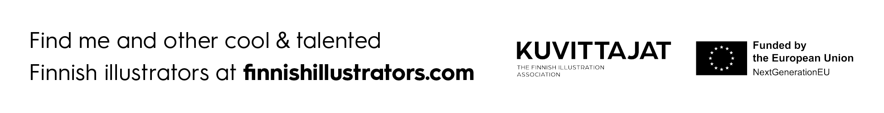

I was based in Philadelphia for nearly a decade before relocating to Finland in 2021. I graduated from the university of the arts in philadelphia with a bfa in illustration in 2019.
My creative process is traditional, I create my works with pencil, gouache and inks. I’ve heard my work described as “unique fusions of color within disciplined compositions” and I think that rings true to my illustrations.
My illustrations have been exhibited at the Society of Illustrators (new york city) as well as Bologna Children’s Book Fair Illustrators Exhibition (italy). I was also the Artist-in-Residence at the renowned Moomin Museum (Tampere, Finland) in 2022, where I had the opportunity to honor one of my creative idols Tove Jansson and her lifetime of work.
Here’s a few of my clients:
NPR, WSJ, PLANSPONSOR, PLANADVISER, Chief Investment Officer, Pentagram, UC Merced | Friends of the Web, morning brew, cog design, Curtis Institute of Music, The Progressive, North American Review, Baltimore Magazine, Eater.com, 5280 Magazine, WSOY, Finnish Illustrators Association, The Poetry Foundation, The Finnish Union of Health and Social Care, The Finnish Psychological Association, Notre Dame Magazine, Middlebury Magazine, Are We Europe, Sierra Club
looking to get in touch?
write a note to my email tildaroseillustration@gmail.com and i'll be happy to hear from you!

miuku (the OG)

squeeky (golden girl)

bonkers ("bonk")

arya (the immortal)

daphne (the baby)
